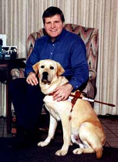
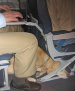
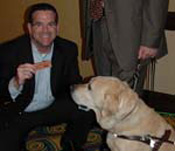
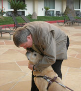
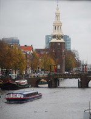
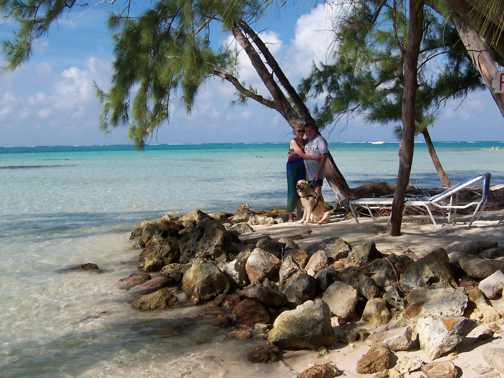

Tribute to Nesbit
May 1997 to August 2010

Nesbit and I graduated from Guide Dogs for the Blind in San Rafael, California, in February 1999, Class 591. At 21 months old, Nesbit became my first guide dog, and over the years we traveled together safely throughout the world.
Nesbit warmed and wagged his way into the hearts of people everywhere we went, but he had special eyes for Gail, my wife (his significant other). While still in training in February 1999, Gail visited me. Nesbit and I were on the stairs at the GDB dorm when Gail arrived – Nesbit was so excited he started to go ballistic. Maureen, the trainer, witnessed the meeting and finally asked that I get my dog (and my wife) under control; it was like that throughout our wonderful years together. I was his boss, and Gail, who loved him dearly, was the sunshine of his life.

My work involves a great deal of travel both national and international, and Nesbit guided me. However I was not able to have Nesbit with me on every trip – it was extremely difficult to get a dog, even a guide dog, into some countries. Also, some of my business travel requires excruciatingly long flights – sometimes I would make the journey alone in order to save Nesbit from the prolonged discomfort. Although there is never any additional cost in travelling with a dog guide, on planes Nesbit would have to curl up under the seat and my legs – Nesbit was a large dog. And, there are of course washrooms on planes, but they are for the human passengers, not for guide dogs!
1st "Million Miler" Guide Dog

Nesbit was Delta Airlines' first guide dog to become a "Million Miler". At a special event held one evening at the 2008 CSUN Conference, Delta personnel presented Nesbit with his own frequent flyer card and a plaque hallmarking his "million mile" accomplishment. Actually, we had both become Million Milers, but Nesbit was the first dog to reach that benchmark.

Although that was Nesbit's last CSUN Conference (he retired shortly afterward) he had attended many over the years. Everywhere he would go at CSUN he would see people he knew. He had the floor plans and layout memorized – it was almost like coming home for Nesbit.
A Job Well Done
 Nesbit's job was to guide me and keep both of us safe, and he was brilliant at his job. I recall Nesbit guiding me through the streets of Rome. Cars were moving very fast and furiously whizzing past in a chaotic sea of movement. Nesbit was rock solid and steady. He never faltered in the chaos of Rome or any other congested city.
Nesbit's job was to guide me and keep both of us safe, and he was brilliant at his job. I recall Nesbit guiding me through the streets of Rome. Cars were moving very fast and furiously whizzing past in a chaotic sea of movement. Nesbit was rock solid and steady. He never faltered in the chaos of Rome or any other congested city.

Almost everywhere we went, Nesbit was made welcome, almost everywhere. I recall a technical meeting in Amsterdam fairly early on in Nesbit's career as my guide dog. It was a large group and at the end of the day we ventured out to find a place to eat, deciding on a Chinese restaurant big enough to hold our group. As Nesbit and I walked in, the person at the door would not allow Nesbit to enter – no dogs allowed. It took a lot of explaining and discussion, but we were finally permitted to enter and have dinner with the group. Nesbit of course did not have dinner. As always he lay under the table. If a dog could be called a perfect gentleman, that dog would have been Nesbit.
Almost everywhere we went we met people we knew. No matter what hotel, what country, if Nesbit and I were in the lobby (or anywhere else for that matter) and someone Nesbit knew came into the room, his tail would wag so hard his whole back end would swing from side to side.
I am sincerely grateful to Guide Dogs for the Blind in San Rafael, California for the brilliant training they provided. A huge thanks goes to all the staff, volunteers, and donors who make having a guide dog like Nesbit possible.
In some ways dogs are like people – some like to lead, and some prefer to follow. Nesbit liked to lead the group, he always wanted to be first. If we started out walking at the back of a group of people, before we reached our destination Nesbit would have managed to squeeze between the others, taking me to the front to lead the pack. When we were walking and encountered a group (large or small) of people coming toward us, he would not go around, he wouldn't hesitate, he would take me right through them. What was amazing though was that they always parted to let us through.

Nesbit had a wonderful life. We traveled the world together but he also loved his time in Montana, especially at our cabin on the Clearwater River. He loved to swim and would go into the water even on the coldest of days. Lilly, our pet yellow lab, was his lifelong canine companion. I cannot forget the experience of taking them for a brisk morning walk in the woods, them bounding over logs, dashing through the trees, and then heading back for breakfast.
Nesbit guided me continuously through March 2008, when I returned to Guide Dogs for the Blind to get Mikey. He had spent his retirement years with Gail, me and Lilly, at our home and at the cabin he loved so much. Nesbit passed away in the most peaceful of situations in our home with Gail and me tenderly beside him. There will never be a dog as wonderful as Nesbit. Only I understand the relationship that I had with Nesbit through the handle of the harness that led me safely through so many cities around the world.
Nesbit's warm, beautiful eyes guided George safely to and around hundreds of places in the world, but those loving eyes also stole the hearts of the people who met him.